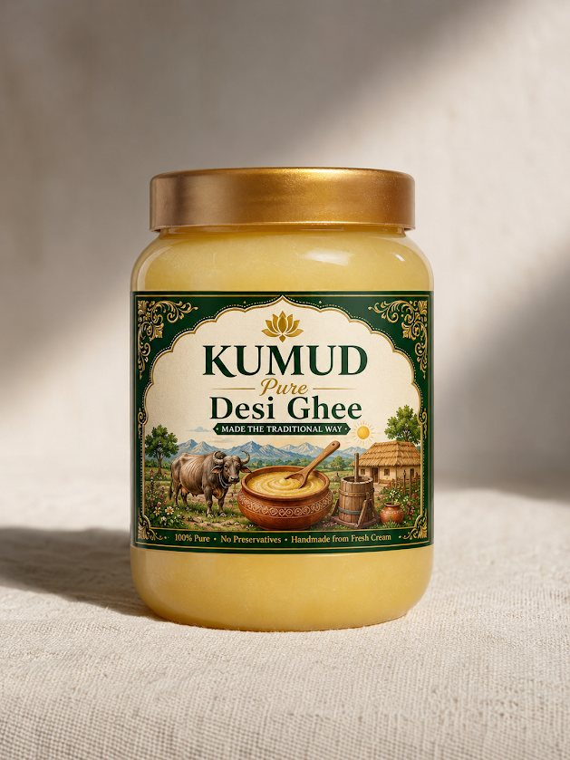
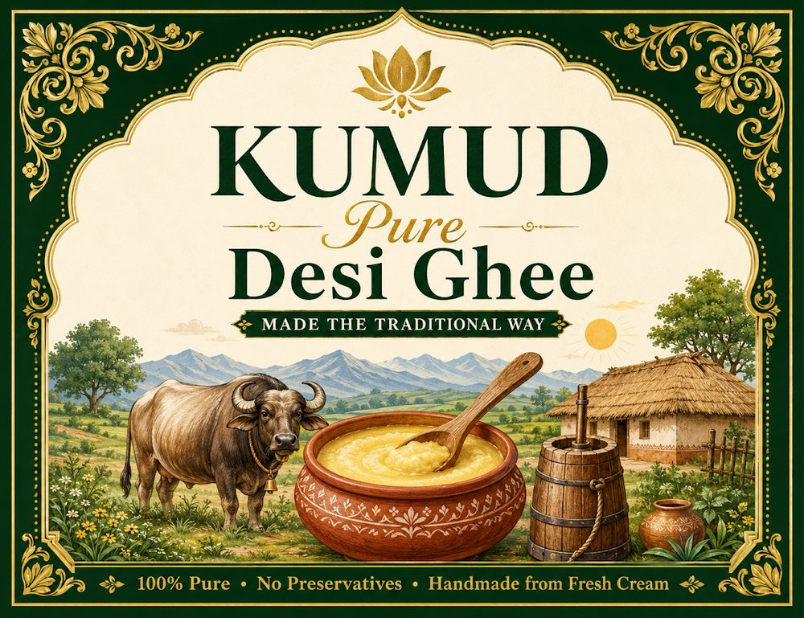

Pure desi buffalo ghee from our family farm in Lucknow
KUMUD Pure Desi Ghee is handmade from the fresh cream of our own buffalo milk, in small batches, with no preservatives.

Choose your jar
250 ml
₹349, a good first jar
500 ml
₹499, for a small family
1 litre
₹899, the best value per ml
Prices include all taxes. Compare the sizes.
A family dairy, now in a jar
Our grandfather was the first in the family to build a dairy business. KUMUD carries that work into Lucknow kitchens. Kumud is a Sanskrit word for the lotus.

What makes KUMUD different
From farm to jar
The milk comes from our family’s own dairy farm, so we can tell you exactly where every jar began.
Small batches
We make ghee by hand in limited batches, and every batch gets a number.
No middlemen
You buy straight from the family that runs the farm, and you can ask us anything.